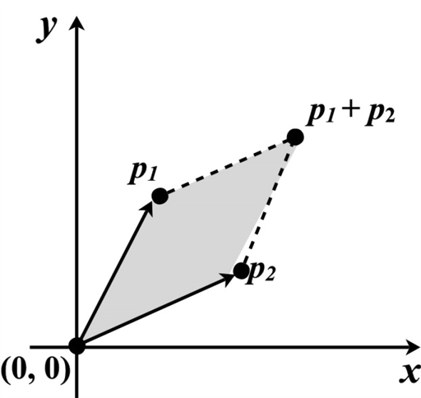
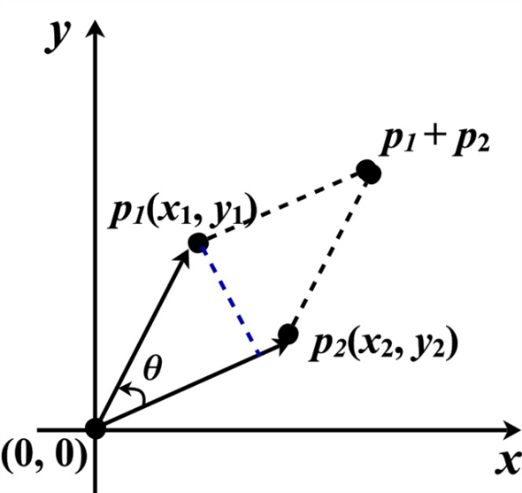
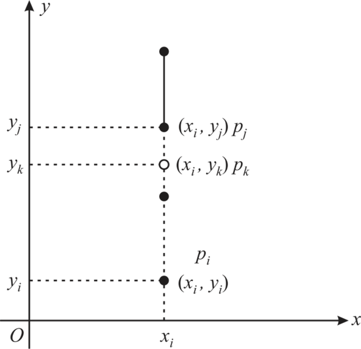
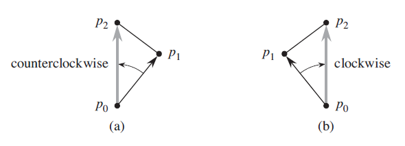
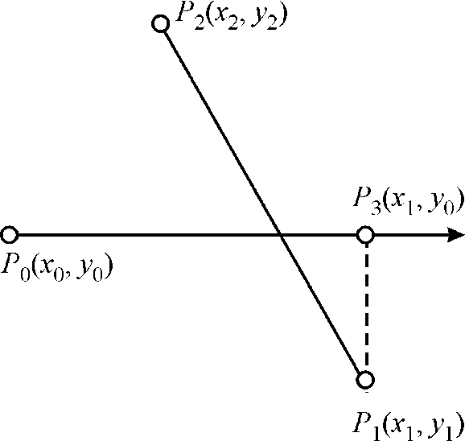
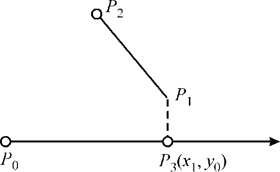
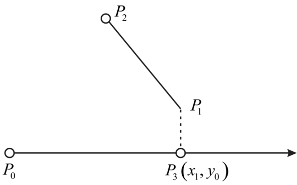
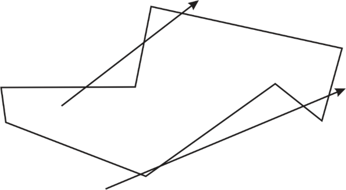

Consider  and
and
 as
two vectors with as the
origin.
as
two vectors with as the
origin.
Vector passes
through the points and, and
passes through the point
and.
The cross product can be interpreted as the signed area of a parallelogram formed by the points .

The moment (in clockwise or anticlockwise) of point from point
,
with respect to the origin, can be identified using the sign of
area of the parallelogram formed by the points .
If the area of the parallelogram is positive, then point
from point , with
respect to the origin, moves in clockwise direction.
If the area of the parallelogram is negative, then point
from point , with
respect to the origin, moves in anticlockwise direction.
Calculate the area of the parallelogram formed by the points .
The following diagram shows the parallelogram formed by the points . The vertical line in blue indicates the height of the parallelogram.

Height can be calculated using the Pythagoras theorem. Consider h is the height of the parallelogram and it is indicated using the blue line.
Area of parallelogram = baseheight
Calculate the area of the parallelogram formed by the points .
Hence, the cross product is same as the area of the parallelogram formed by the points . Also, the sign area of the parallelogram gives the direction of the point’s movement.
Therefore, if the cross product is
positive, then vector moves
clockwise from vector with respect
to the origin . The
vectormoves
anticlockwise from vector with respect
to the origin , if the
cross product is
negative.
Consider the ON-SEGMENT given on page number 1018 of the textbook. The ON-SEGMENT takes the coordinate of three points as an argument. The ON-SEGMENT used in the algorithm SEGMENT-INTERSECT to check whether two lines intersect each other or not.
• It takes a points and check whether these lines are on the same side of the point or the opposite side of the points.
• If these lines exists in the opposite side then these lines will intersect each other otherwise they will not intersect each other.
Now consider the proposal of the Professor van Pelt. Professor takes only the x-dimension to perform the checking on the line number 1 in the ON-SEGMENT.
Consider the following diagram:

In the above diagram, suppose two lines are vertically exists on each other. In this case, the x- coordinate of the both lines will be same. So, y-coordinate must need to check whether these are of the same side of the point or opposite to each other.
So, the proposal of the Professor van Pelt will be wrong here to determine the intersection of two line.
Consider the following algorithm which is used to sort a
sequence  of n
points according to their polar angles with respect to a given
origin point. The
following given algorithm takes a running time of
of n
points according to their polar angles with respect to a given
origin point. The
following given algorithm takes a running time of .
.
PROC Point
1. Define the variables x and y
// Define a prototype of a function which is used further in the procedure.
2. Point operate (float _x, float _y): x(_x), y(_y)
// Define function operate which takes a constant argument.
3. Point operate +( const Point &th)
// It call the function Point once again with two argument
4. return Point( x+th.x, y+th.y);
// Define constructer function Point in which the coordinate are subtracting
5. Point operate -( const Point &th)
//It call the function Point with the two argument
6. return Point( x-th.x, y-th.y);
//Assignment performed here
7. Point& operate=(const Point &th)
// If conditional statement is used to check whether the constructer value
//and the defined values are same or not
8. if this==&th
//If this is true then return the pointer of constructer
9. return *this;
//Assignment performed.
10. x = th.x;
11. y = th.y;
//Return the pointer
12. return *this;
//Define the procedure ostream
13. friend ostream& operate << (ostream& os, const Point &p)
14. display x, p.x, y, p.y;
15. return os;
//Define procedure which takes the coordinate of two points as an argument
16. boolean mfunc(Point &p1, Point &p2)
//now check if the y- coordinate of p1 is greater than zero and the y-
//coordinate p2 is less than zero then return true
17. if p1.y>0 and p2.y<0
18. return true;
//now check if the y- coordinate of p1 is less than zero and the y-
//coordinate of p2 is greater than zero then return false
19. else if p1.y<0 and p2.y>0
20. return false;
//now check if the subtraction of multiplication of y- coordinate of p2 and
//x- coordinate of p1 and of y- coordinate of p1 and x- coordinate of p2 is
//less than zero then return false.
21. if ((p1.x*p2.y – p2.x*p1.y)<0)
22. return false;
23. return true;
Running time analysis:
In the above algorithm, from the line number 1 to line number
15, only it takes a constant running time and from line number 17
to line number 23, the cross product are performed and it will take
a running time of .
Hence, total running time of above algorithm is
.
A convex polygon:
To determine the turn of segments that is whether the consecutive segments turn left or right, we have to consider the cross product between the segments.
For example to determine the left or right turn of 3 given consecutive point
We have to check whether the directed segment is clockwise or counterclockwise relative to the directed segment.
As mentioned in below figure if-
a. Cross product of  is negative
then it means that is
counterclockwise with respect to .Thus we
made a left turn at.
is negative
then it means that is
counterclockwise with respect to .Thus we
made a left turn at.
b. Cross product of is positive
then it means that is clockwise
with respect to .Thus we
made a right turn at .
And finally, if cross product is 0 means points are collinear. At that point we cannot decide whether the left or right turn has been made.

Since each of cross product operation will take constant time that is and since we need to calculate cross product for n times total time will be of that is the liner time.
Above mention algorithm would not always work because when angle between two consecutive segments is, there would not be any turn and algorithm will not be able to decide the turn .At that point, algorithm will fail.
The modification is simple.Consider each set of three consecutive points along the polygon, if every angle is or less, it is convex. This runs in O (n) time.We can even check for a convex polygon if its sum of interior angles is.
Intersection of two Line Segments
Consider that a point.Now, the right horizontal ray from is the set of all those points such that:
In other word the right horizontal ray from is set of points due right of along with itself.Consider a point, a line.


1. Consider lines and.
2. is determined by largest x coordinate between and and the given.
3. Check intersection of line and.
4. It will take constant time.
Hence, it can be done in constant time that is .
.
A polygon is the diagrammatic representation of a piece-wise linear and closed curve in the plane. The point in polygon problem refers to the problem or condition in which it is checked that if a point P lies inside the polygon, lies outside the polygon or it lies on the boundary of a polygon.
Certain tools and software are available such as CAD (Computer Aided Design) and computer graphics that are used for checking the above stated conditions of the polygon problem.
Here, it is asked to show that how it is possible to compute in
 time whether a point is in the
interior of an n-vertex polygon.
time whether a point is in the
interior of an n-vertex polygon.
In order to solve the above problem, two methods can be used which are as follows:
1. Ray casting algorithm
2. Winding number algorithm
Ray casting algorithm: It is a simple way of finding whether a point is inside or outside the polygon as compared with winding number algorithm. It is also called crossing the number algorithm. In this, the number of times a ray crosses the edges of a polygon is counted or analyzed.
Winding number algorithm: It is a slower algorithm than ray casting algorithm. The value non zero in this algorithm means that the point lies inside the polygon. Winding number must be non-zero.
Consider the exercise 33.1-6 of this text book,
To calculate whether a point intersects a line, consider a pointand a line.
The point and the line are shown as below:

1. Consider lines and.
2. is determined by the largest x coordinate between and and the given coordinate.
3. Check intersection of and.
4. It will take constant time.
Hence, deciding whether a point intersects a line or not can be
done in.
In the example given above, the time taken has a complexity
of.
Now, if the polygon has n vertexes for a line then, all the
vertices should be checked for the given line. So, the complexity
of finding whether a point is in the
interior of an n-vertex polygon will be .
.
The algorithm for finding whether a point is inside a polygon is given below:
Defining the x and y coordinates of the point and polygon
1. Def point_ inside_ polygon (x, y, poly):
//Calculating the length of polygon and assigning this to variable N.
2. n = Length (poly)
//If the point is inside the polygon, then make the value as false
3. inside = false
//Now, assign the coordinates of the polygon as
4. = poly
//Initialize a for loop which will traverse the line
5. for i in range
6.
//Use if condition to check whether the point is inside or not
7. if y >min;
8. if y max;
max;
//Use if condition to check whether the point is outside or not
9. if x
max;
10. if 
//Finding the value of x by using slope and another point
11. x integers =
//Condition to check whether the given point is inside or outside
//the polygon
12. if
13. Inside= not inside
//Equating the coefficients of both the points with returning
// true
14.
15. return inside;

In the figure given above, tail of one arrow is inside the polygon and making three intersections to border of the polygon where as the tail of the other one is not inside the polygon and making four intersections.
To compute whether a point is interior to n- vertex polygon says P , steps used are as given below:
? Check if is not on the boundary of P (this can be done by going through vertices and edges of the polygon P.
? Draw a horizontal ray from given point, then count the number of intersections between polygon edges and the horizontal ray from.
? If drawn horizontal line from the given point is along the side of the polygon that is it overlaps a side of the polygon, then, do not increase the count.
? When the horizontal ray goes through a polygon vertex,
Check the conditions given below:
1. Check if both edges to the vertex are below or above the ray then, do not change the count.
2. Check if one edge is below and the other edge is above then, increase the count by 1.
The polygon can be represented as a list of consecutive edges, checking whether the ray intersects the polygon side or not can be done in an order of linear time.
? Even number of intersections imply that is inside the polygon.
? Odd numbers of intersections imply that is inside the polygon
In the above algorithm, all the vertices of the polygon are
considered. And, checking or deciding whether any point intersects
a line or not has a complexity of.
Now, in the given case, the polygon has n vertices and
therefore, for the intersection, all the vertices should be checked
for the given line. So, the complexity of this algorithm will
be,
where n is the number of vertices of polygon.
Thus, it is possible to compute in time
whether a point is in the
interior of an n-vertex polygon.
Computing the area of an n- vertex simple polygon:
A closed path made up of straight and non-intersecting lines segments are called as simple polygon. Basically the sides of simple polygon do not intersect each other.
A non-convex polygon specifies that the internal angles can be greater than.
The generalize formula to calculate the area of polygon is as follow:
Assume a simple polygon has n vertices,  and
and
 are the
arrays which stores x and y coordinates of each vertex. Consider
the following algorithm to determine area of simple polygon:
are the
arrays which stores x and y coordinates of each vertex. Consider
the following algorithm to determine area of simple polygon:
POLY-AREA(X, Y, n)
1.
2. for to
n-1
to
n-1
3.
4.
5. return
One calculation is performed for every point and constant time is required for it. The loop in line 2 iterates for n-1 times. So, the algorithm executes in linear time.
Therefore using the above algorithm one can calculate the area
of n sided simple polygon in time.